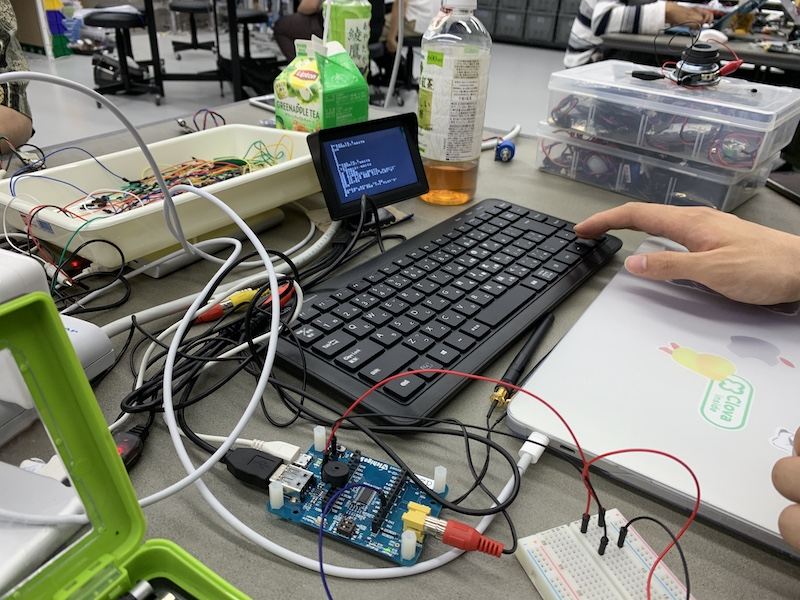
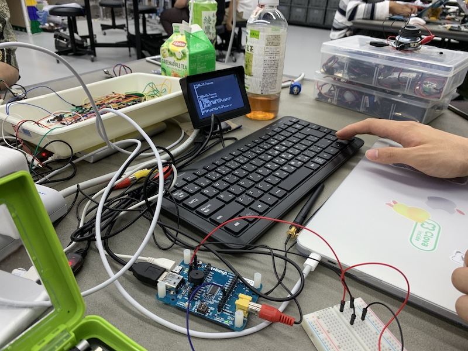

成果
騒音を音楽する＿街中で日常的に聞こえてくる騒音を、音楽に変換することで、現代社会のストレスを軽減する
学習進捗
製作の構想段階から音、音楽がキーワードとして上がっていた。
自前のスピーカーで大きい音が出せるかどうかの実験、結果としてarduinoのパワーでは十分に鳴らすことができなかった。
左がスピーカーで右がマイク。
配線を間違えて焦げ臭い匂いがしたりすることもあったが、一応形になってよかったと思う。
騒音を音楽する＿街中で日常的に聞こえてくる騒音を、音楽に変換することで、現代社会のストレスを軽減する
製作の構想段階から音、音楽がキーワードとして上がっていた。
自前のスピーカーで大きい音が出せるかどうかの実験、結果としてarduinoのパワーでは十分に鳴らすことができなかった。
左がスピーカーで右がマイク。
配線を間違えて焦げ臭い匂いがしたりすることもあったが、一応形になってよかったと思う。